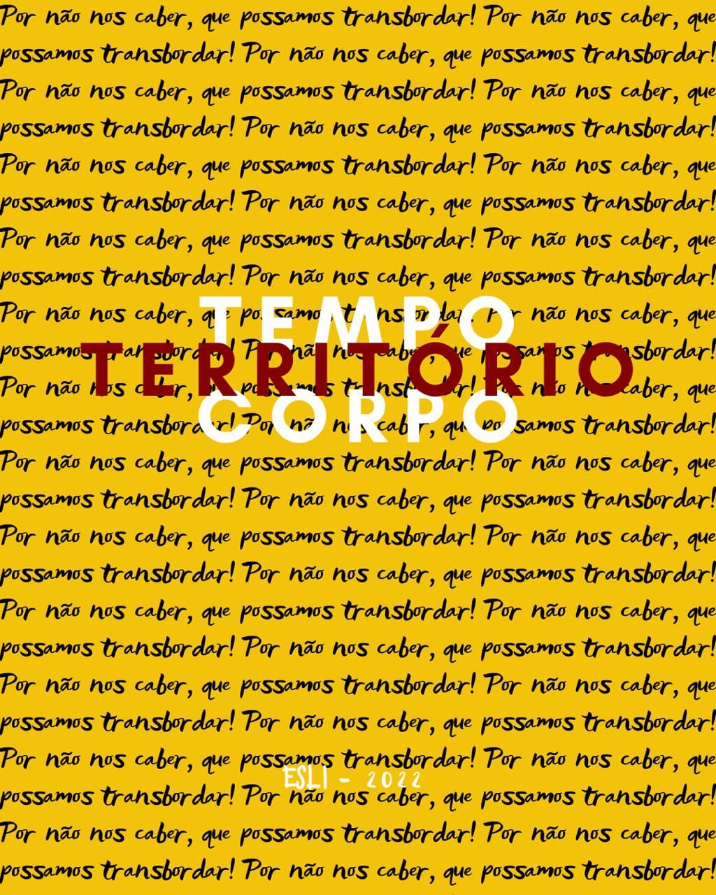

Que a gente transborde
Seu João foi levado cedo demais. Entre o concreto e o barulho dos dias, sob estrelas que não dá pra enxergar, ele pedia pra voltar pra casa. Disseram que era só velhice. Seu João pedia pra voltar pra casa. Insistiam que era velhice, ignorando o pé de acerola e aquela horta, a imensidão do mar, a quietude do cair do dia, e o brilho das estrelas. Ignorando tudo que seu joão sabia, conhecia e vivia. Tempo, território e corpo são três vídeo-colagens sobre a gente que não cabe neste Brasil. Por não nos caber, transbordamos. Que a gente possa, enfim, transbordar.
